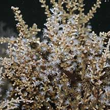
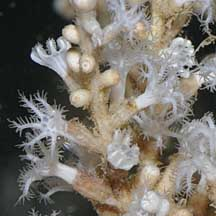
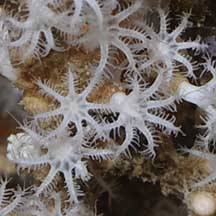
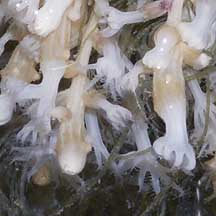
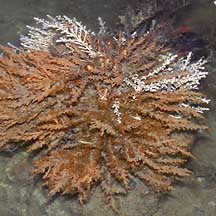
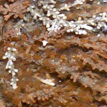
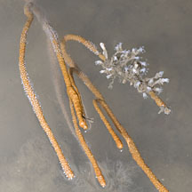
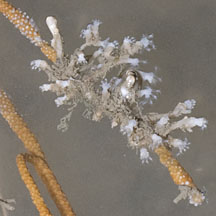

|
|
| soft corals text index | photo index |
| Phylum Cnidaria > Class Anthozoa > Subclass Alcyonaria/Octocorallia > Order Alcyonacea |
| Knobbly
soft coral Carijoa sp.* Family Clavulariidae updated Nov 2019 Where seen? This colony of bumpy animals is commonly seen on some of our Northern shores, but often overlooked as it resembles a plant. It grows on large boulders, jetty pillings and other hard surfaces. Features: 5-8cm long. The colony comprises a cluster of sparsely branched 'stems', forming short bushes or bushy fringes on hard surfaces. Each long stem is a primary polyp bearing large secondary polyps in capsules (about 1cm long) regularly arranged along the length. The polyps can retract completely into the capsule. Colour usually white although the colony may be overgrown with colourful encrusting sponges and ascidians. The animals do not have symbiotic algae (zooxanthellae) and thus can be found in murky water and dark places. Sometimes mistaken for a sea fan (Order Gorgonacea) or a hydroid (Order Hydrozoa). |
|
 Keppel Bay, Oct 09 |
 Secondary polyps emerge from a capsule. |
 Eight branched tentacles. |
 Pulau Sekudu, Apr 06  |
 Changi, Jul 07  |
 Changi, Jul 12  Growing on a living sea fan. |
*Species are difficult to positively identify without closer examination.
On this website, the animals are grouped by external features for convenience of display.
| Knobbly soft corals on Singapore shores |
On wildsingapore
flickr
|
| Other sightings on Singapore shores |
|
Acknowledgement
References
|